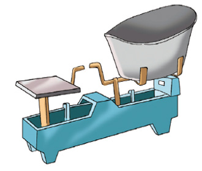
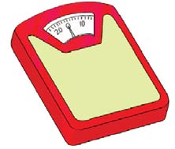
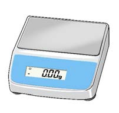

Vipimo vya uzani
Uzani ni kipimo cha uzito wa vitu. Uzani wa kitu unaweza kupimwa kwa kutumia vipimio rasmi na visivyo rasmi vya uzani.
Vipimio visivyo rasmi vya uzani
Vipimo visivyo rasmi vya uzani ni kama vikombe, vijiko, debe, magunia, ndoo na makasha. Picha ifuatayo inaonesha ndoo mbili zenye mchele.
Je, ni ndoo ipi ina uzani mkubwa wa mchele? Eleza sababu ya jibu lako.
Vipimio rasmi vya uzani
Vipimio rasmi vya uzani wa vitu mbalimbali ni mizani. Vipimio hivyo hutambulika kitaifa na kimataifa. Picha zifuatazo zinaonesha baadhi ya mizani.


